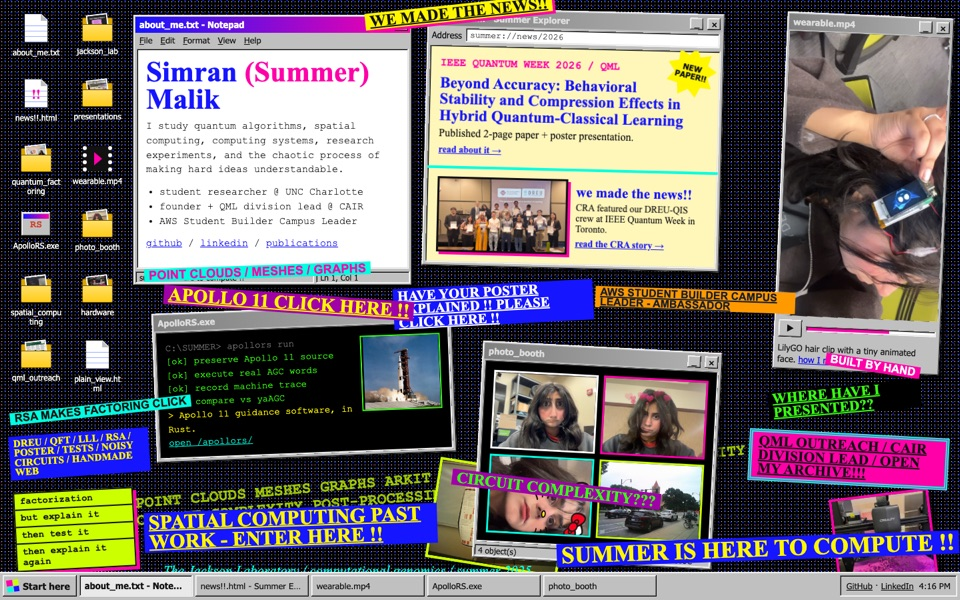
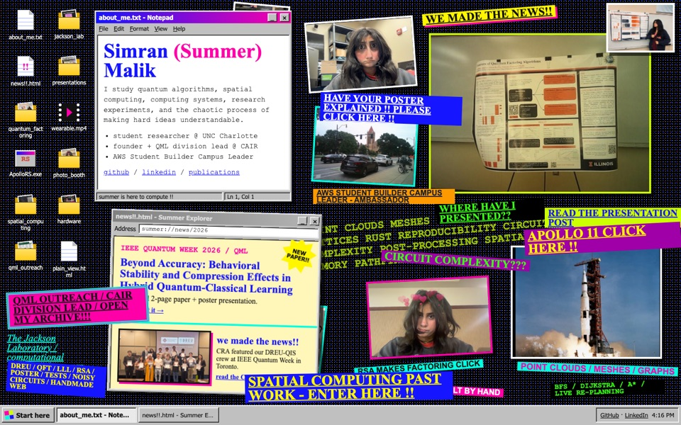
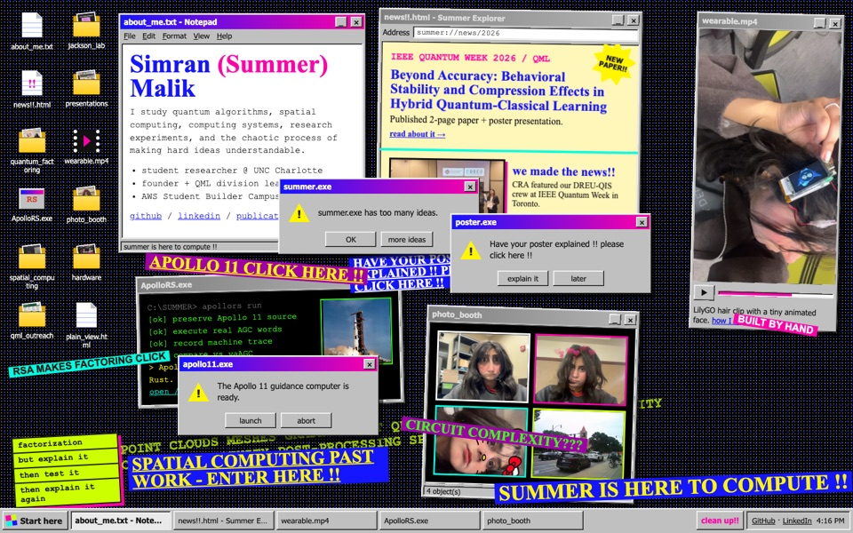
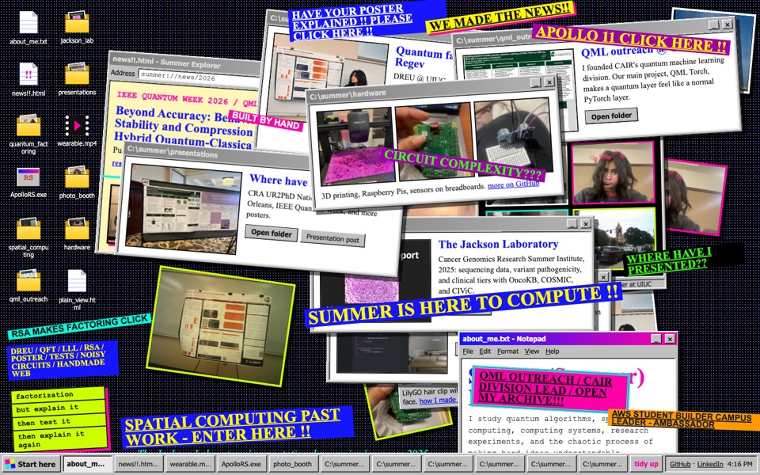
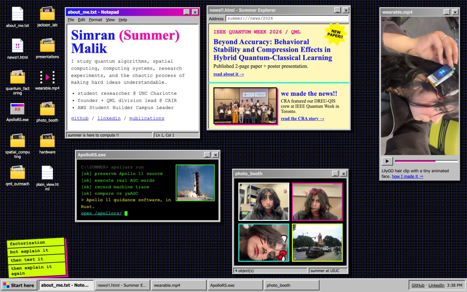
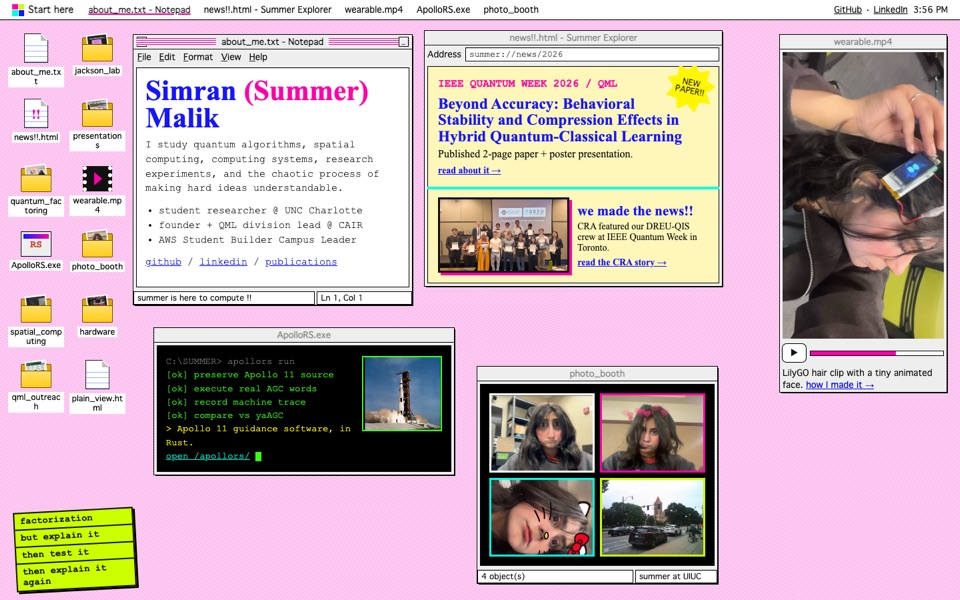
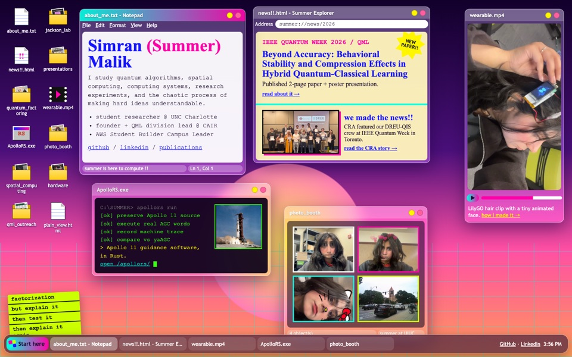
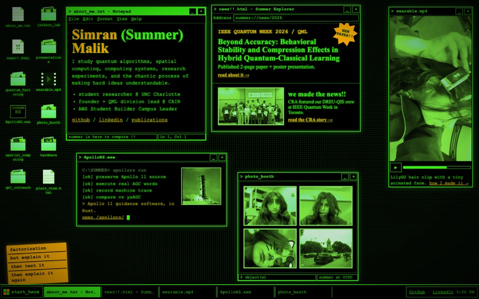
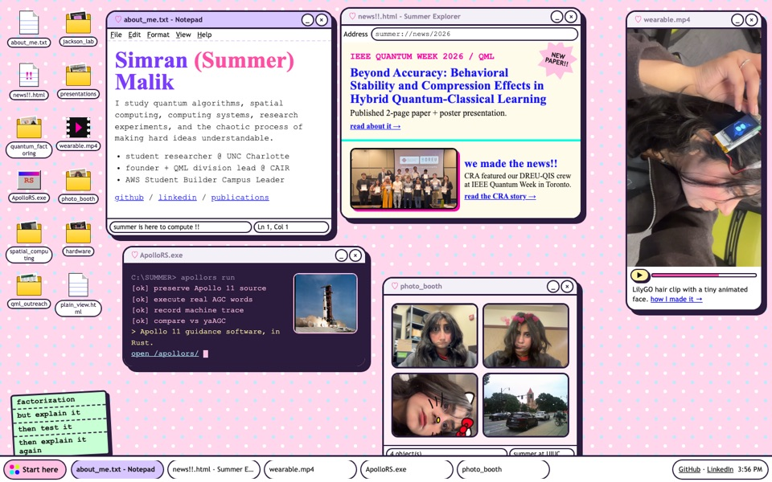

Messy SummerOS !!
Your old collage + SummerOS. Same windows and Start menu, plus all your neon signs, stickers and photos. Try dragging windows around — there's stuff hiding underneath.

M1 / sticker bomb
Sticker bomb
The SummerOS desktop with every old neon sign slapped on top, windows slightly crooked. Click a window and it straightens up.
open →
M2 / old site as wallpaper
Collage wallpaper
Your old homepage collage IS the desktop wallpaper. Only two windows open, so the photos and signs show; the rest open from icons.
open →
M3 / it's crashing (on purpose)
System overload
Error pop-ups like “summer.exe has too many ideas”. “more ideas” spawns more. Dragging leaves a Windows 98 trail. “clean up!!” in the taskbar fixes it.
open →
M4 / maximum chaos
Desk explosion
Every window open, thrown to random spots and angles on each visit, photos and signs everywhere. “tidy up” in the taskbar stacks them neatly (and back).
open →SummerOS themes (tidy)
Same desktop, same windows, same Start menu — five different looks. Click one to try it: drag windows, open the folders, hit "Start here". Then shrink the window or open it on your phone.

1 / the original
SummerOS 98
Gray beveled windows with blue-to-pink title bars on your neon dot wallpaper.
open 1 →
2 / classic mac-style
Platinum
Menu bar on top, pinstriped pink title bars, crisp black outlines on a pink checker desktop.
open 2 →
3 / y2k dream
Vaporwave glass
Frosted see-through windows over a sunset grid, rounded floating dock.
open 3 →
4 / apollo-era computer
Phosphor terminal
Glowing green CRT with scanlines. Photos are green-tinted until you hover them.
open 4 →
5 / cute
Pastel sticker
Polka-dot desktop, chunky rounded windows with a different pastel title bar each, little hearts.
open 5 →